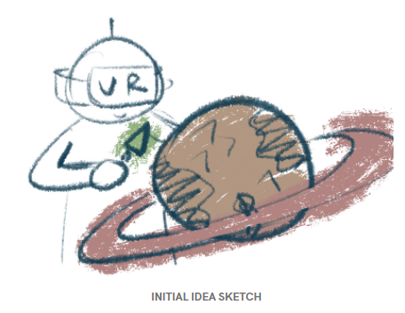

Our initial idea was inspired by Gravity Sketch, Tilt Brush, and Lego sets. In Gravity Sketch and Tilt Brush, you create everything from scratch. We wanted a game with enough structure to guide the user, while still leaving room for creativity.
Soular is similar to a Lego set, but more immersive: the user is inside a galaxy, shaping a planet in space. That is something you cannot easily do in the real world.
The game does not require controllers. Hands handle everything, so users can play anywhere and anytime as long as they have a headset.